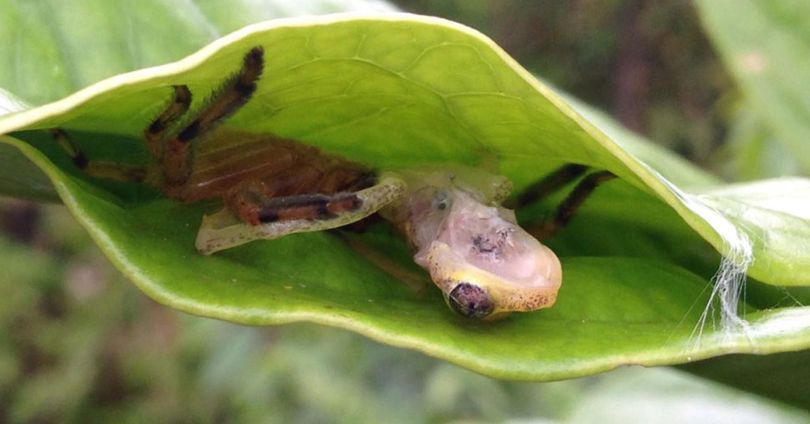

 Dominique
Andreas Martin
Dominique
Andreas Martin
Des araignées cousent des feuilles pour piéger des grenouilles
Nous avons vu dans Sciences et Avenir paru en Mars 2021, que des araignées appelées Damastes piègent des grenouilles au sein d'un abri constitué de deux feuilles reliées par des fils de soie.
Les grenouilles s'y abritent en pensant se protéger du soleil alors que c'est un piège mortel.